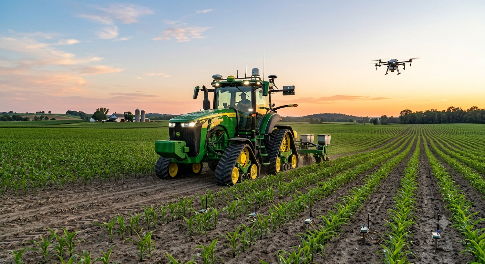
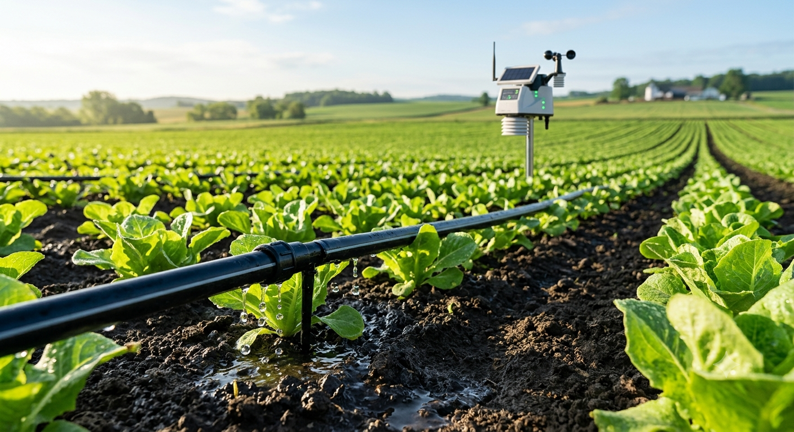
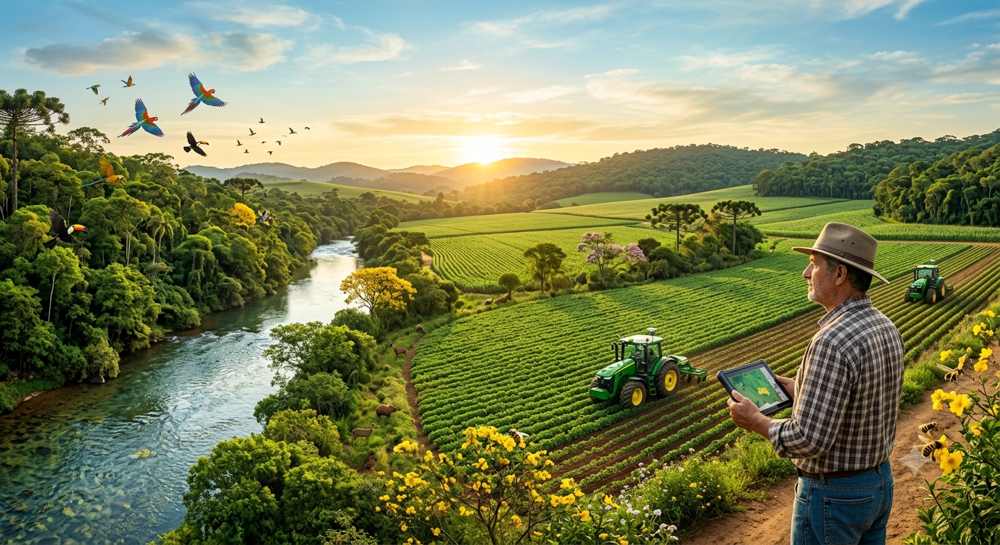

Sustentabilidade no Campo
Clique nos cartões abaixo para virá-los e descobrir a inteligência por trás de cada prática!

Agricultura de Precisão
Clique para virar ↺O que é?
É o uso de GPS, drones e sensores no solo para aplicar água, sementes e fertilizantes apenas no local e na quantidade que a planta precisa, evitando desperdícios e protegendo o solo.

Irrigação Inteligente
Clique para virar ↺Como funciona?
Sistemas conectados à internet (IoT) medem a umidade exata da terra e analisam a previsão do tempo. Assim, o sistema só molha a plantação quando é realmente necessário, economizando muita água.

Energia Limpa
Clique para virar ↺Energia Sustentável
Uso de painéis solares para captar a energia do sol e a construção de biodigestores, que transformam os resíduos orgânicos e esterco dos animais em gás e energia elétrica para a fazenda.

Bioinsumos
Clique para virar ↺Proteção Natural
Uso de defensores, remédios e fertilizantes naturais feitos a partir de microrganismos vivos (como fungos e bactérias boas) para combater pragas sem agredir a natureza.

Rotação de Culturas
Clique para virar ↺Solo Saudável
Consiste em alternar as espécies de plantas que são cultivadas em uma mesma área a cada safra. Isso quebra o ciclo de pragas e recupera os nutrientes da terra de forma 100% natural.
Desafios Ambientais
Para crescer com responsabilidade, precisamos encarar e mitigar os impactos da expansão desordenada.
Desmatamento
A necessidade urgente de barrar o avanço sobre biomas nativos.
Crise Hídrica
O esgotamento de lençóis freáticos pelo uso irracional da água.
Emissões de Carbono
Manejo inadequado aumentando gases de efeito estufa na atmosfera.
O Futuro: Agricultura Regenerativa
A ciência e a tecnologia agindo como pontes para restaurar o meio ambiente sem interromper o ritmo de produção do campo.
Sistemas como a ILPF (Integração Lavoura-Pecuária-Floresta) e o avanço dos bioinsumos (defensivos naturais) provam que o crescimento horizontal deu lugar ao crescimento vertical: produzir muito mais na mesma quantidade de terra.
Calculadora de Impacto Ambiental
Descubra a economia gerada por manejos sustentáveis.
Faça parte da mudança
Tem dúvidas ou quer assinar nossa newsletter sobre inovações verdes no agronegócio? Envie uma mensagem!